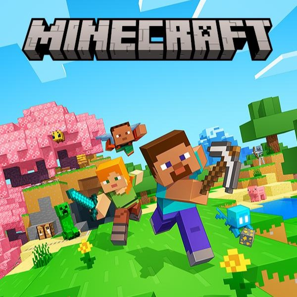

Minecraft

Год выпуска: 2011
Жанр: Песочница, Выживание
Разработчик: Mojang Studios
Издатель: Mojang Studios, Microsoft
Платформа: PC, Xbox, PlayStation, Switch, Android, iOS
Язык интерфейса: Русский, Английский
Описание
Minecraft — это игра про кубический мир, в котором можно делать всё что угодно. Добывай ресурсы, строй дома и целые города, спускайся в шахты и сражайся с мобами. Ночью вылезают зомби и скелеты, поэтому сначала надо успеть сделать себе укрытие. Есть режим выживания, где надо следить за голодом и здоровьем, и творческий режим, где у тебя бесконечно блоков и можно просто строить. Ещё можно сходить в Незер и в Энд, где живёт главный босс — Эндер-дракон, а играть можно как одному, так и с друзьями по сети.
Системные требования
Минимальные
ОС: Windows 10
Процессор: Intel Core i3-3210 / AMD A8-7600
Оперативная память: 4 ГБ
Видеокарта: Intel HD Graphics 4000 / AMD Radeon R5
Место на диске: 1 ГБ
Рекомендуемые
ОС: Windows 10 / 11
Процессор: Intel Core i5-4690 / AMD A10-7800
Оперативная память: 8 ГБ
Видеокарта: NVIDIA GeForce 700 / AMD Radeon Rx 200
Место на диске: 4 ГБ (SSD)
Оценка и рецензии
Игра детства, наиграл кучу часов. Даже спустя столько лет с друзьями залетаем на сервер и строим базу с нуля. С модами вообще никогда не надоедает.
Отличная песочница, полная свобода действий. Единственный минус — обновления в последнее время выходят редко и добавляют мало контента.